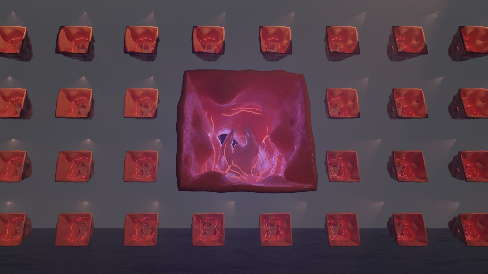
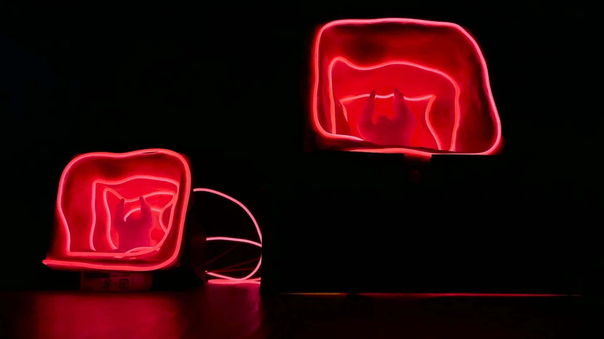
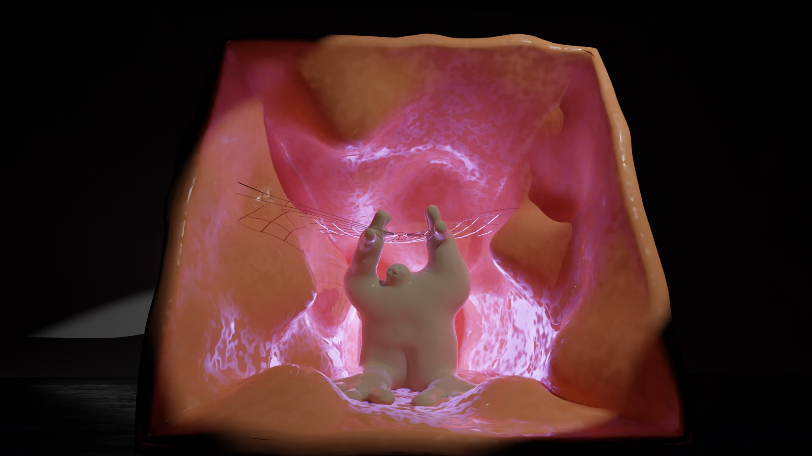
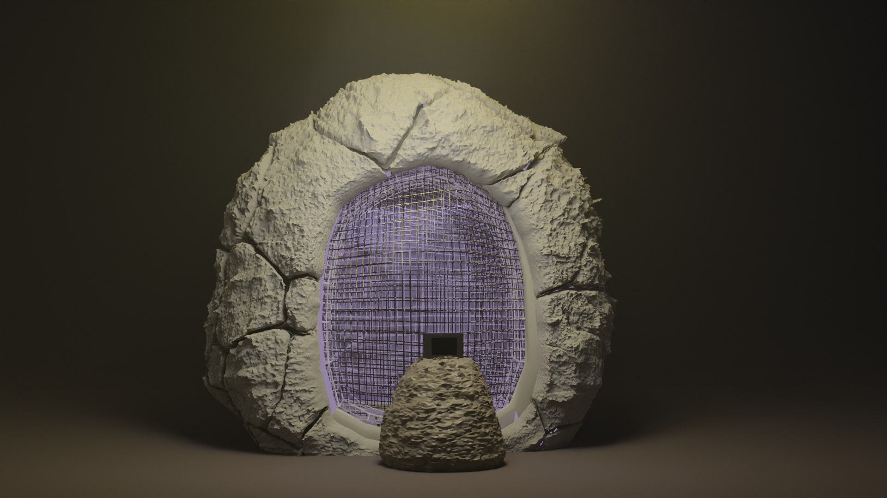

07 — 2023 — Bio-art sculpture · 3D print, soft membrane, light
Luminous Membrane
以 3D 列印成形、由內部 LED 照明的雕塑。A 3D-printed sculpture illuminated from within by LED lines.
- Medium
- Blender sculpt, 3D-printed modules, translucent membrane, LEDs, Arduino
- Format
- Wall of repeated modules with one illuminated organic core (renders; prototype modules printed)
- Role
- Concept, sculpting, print files, electronics (solo)
- Year
- 2023
01
一整面相同的紅色模組中，其中一格置入由內部發光的粉紅色軟質核心。作品探討身體的邊界：列印的外殼可被重複製作，發光的膜則無法重複。
A wall of identical red modules, one of which holds a soft pink core illuminated from within. The work considers where the body ends: the printed shell can be reproduced; the illuminated membrane cannot.
02
核心以 Blender 雕塑，轉為 3D 列印檔輸出，並以 Arduino 控制 LED 燈條由內部照明。整面牆的影像為渲染圖，照片為實際列印成品。
The core was sculpted in Blender, prepared for 3D printing and lit with Arduino-controlled LED lines. The wall images are renders; the photograph shows the printed piece.



- 3D
- Blender sculpting, STL preparation
- Fabrication
- 3D-printed modules
- Electronics
- Arduino, LED lines
- Period
- Oct–Dec 2023